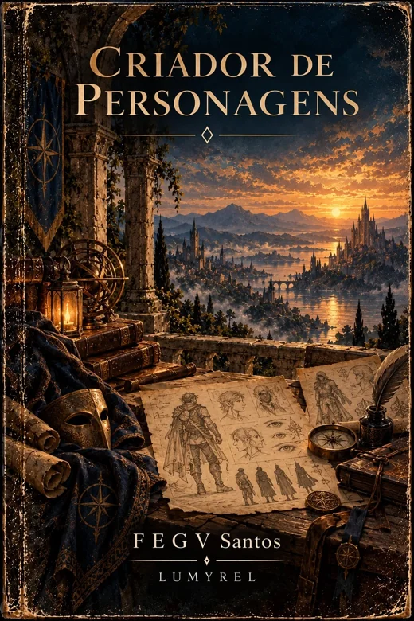
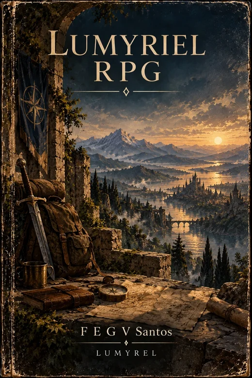
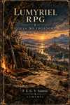
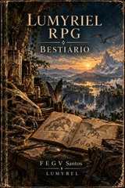
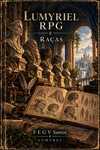

Livro do Mestre
Condução de campanhas, cenas e consequências.
Em desenvolvimentoRecursos para construir personagens e acompanhar os próximos caminhos de Lumyriel.

Construa origem, aparência, cultura, crenças, treinamento, equipamentos, limitações e histórico. A competência nasce daquilo que o personagem viveu, aprendeu e consegue sustentar.
O criador permite guardar o rascunho neste navegador e exportar a ficha.

Uma experiência single player em desenvolvimento, pensada para conectar o personagem criado no site a campanhas narradas dinamicamente e coerentes com o mundo.
Integração com o criador, duração de campanha e dificuldade ajustáveis fazem parte da proposta. O jogo ainda não está disponível para jogar.
Projetos editoriais em desenvolvimento, com capas aprovadas.
Condução de campanhas, cenas e consequências.
Em desenvolvimento
Criação, interpretação e participação no mundo.
Em desenvolvimento
Criaturas, comportamento e integração ao jogo.
Em desenvolvimento
Povos e espécies jogáveis de Lumyriel.
Em desenvolvimento